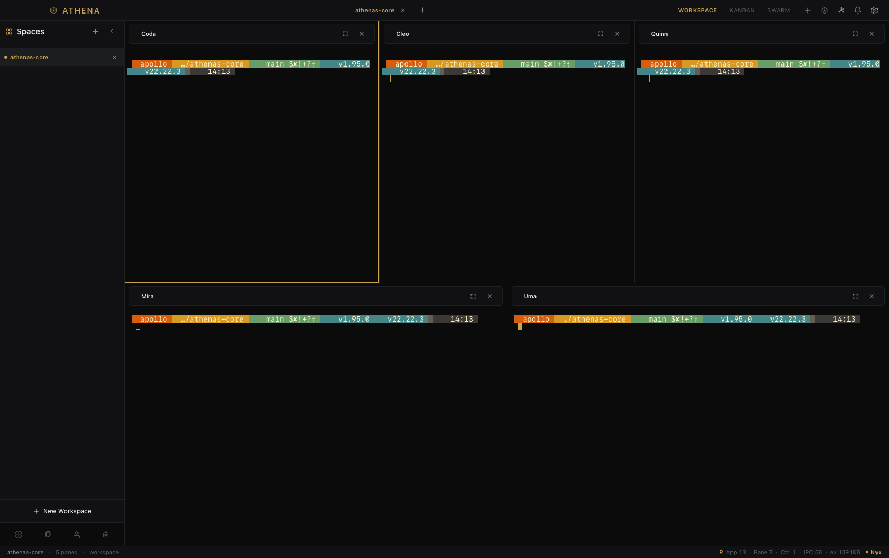
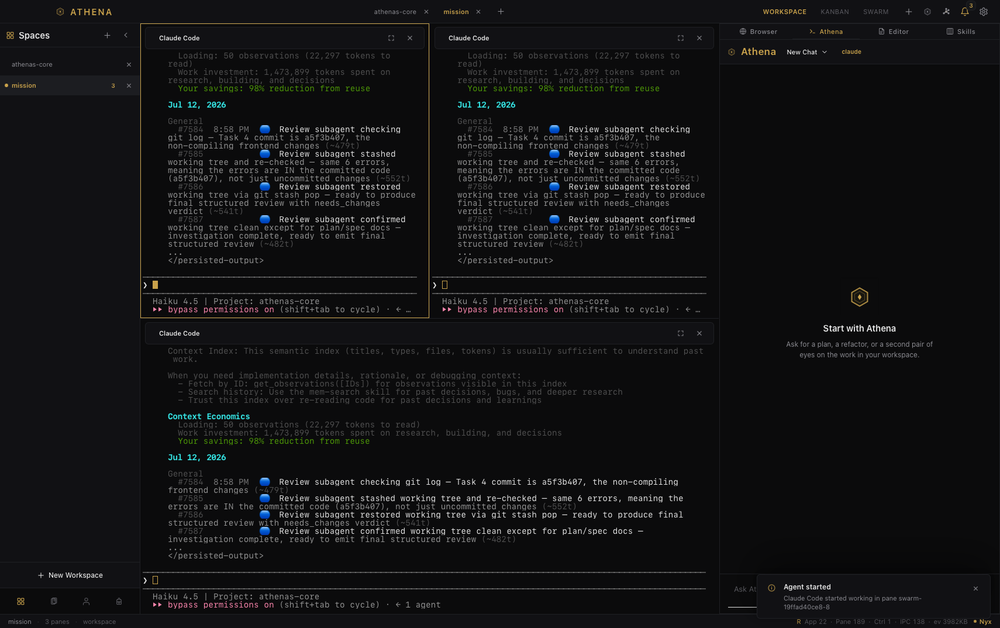

A
A project home
Keep workspaces, files, sessions, and the next action close at hand.
Native AI development workspace
Athena’s Core brings the terminal, the conversation, the task board, and your agent team into one focused desktop window.

02 / the film
See the flow from a blank workspace to a running team of agents. The film uses real captures from Athena’s Core.
03 / the workspace
Open the pieces of a project without scattering your attention across five separate apps.

Keep workspaces, files, sessions, and the next action close at hand.

Athena can work from the workspace you are already looking at.

Turn ideas into a board your agents and your team can share.

Launch a coordinated group of agents when the task is bigger than one thread.
04 / the point
Rust and Tauri 2 keep the desktop shell compact and close to the platform.
Terminal output, tasks, agents, and chat share one workspace instead of competing for your attention.
Athena’s Core is in active beta. Test it, break it, and help decide what comes next.
05 / early access
Try the current macOS build, tell us what gets in your way, and follow the project as it grows.
Support
Athena’s Core is free for everyone. If it saves you time, a donation helps keep development going.
BTC, ETH, USDT, USDC — any chain.
bc1qn8ehwc7rxlpgvljztr5k6npqf307xq00dqatf80x4260456e1dbdc880d69d75949726953215a93586TSBUpAreTjmUscbUbf4L1wkX1fvvJvSRGW